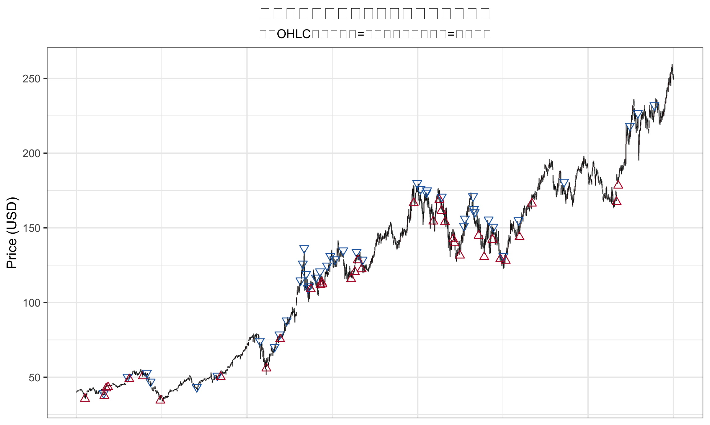
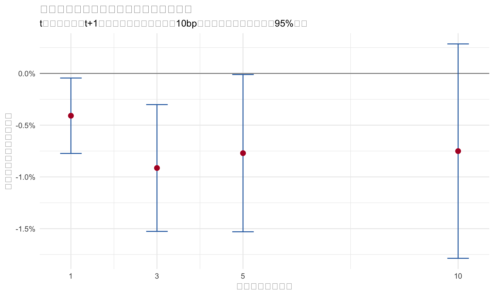

蜡烛图与期权决策
问题现场
看涨形态不等于“买入看涨期权”。期权收益还取决于隐含波动率、期限、行权价、时间价值、波动率微笑和买卖价差。只有标的日线而没有期权链时，我们最多研究方向择时，不能宣称验证了期权策略。
学习目标
- 区分标的方向信号与期权合约选择；
- 理解Delta、Gamma、Theta和Vega的基本风险；
- 将蜡烛候选信号转换为目标Delta暴露；
- 明确缺少期权数据时的证据边界；
- 设计包含隐含波动率和价差的后续检验。
经典形态与市场机制
期权买方获得非线性收益并付出时间价值，卖方收取权利金并承担尾部风险。Delta描述期权价格对标的价格的一阶敏感度，Gamma描述Delta变化，Theta描述时间衰减，Vega描述隐含波动率变化。蜡烛图只来自标的OHLC，直接关联的主要是短期方向与实现波动，而不是期权定价误差。
经典用法可能在看涨反转后选择看涨期权，在看跌反转后选择看跌期权。本书把它改写为两阶段决策：第一阶段检验标的方向是否有信息；第二阶段在完整期权链中选择到期、行权价和执行方式。第一阶段失败时，不应靠期权杠杆“修复”信号。
可计算定义
本章方向信号为星线与吞没的净方向，并要求20日实现波动率高于样本中位数，以研究高波动环境中的候选。目标Delta暴露可设为：
\[ \Delta_t^{target}=0.25s_t, \]
只表示组合对标的价格变动的近似一阶暴露。真实合约数量还需除以单张合约乘数与单张Delta，并受最大权利金、价差和流动性约束。没有期权链时，本章只报告标的方向调整收益。
研究设计
主实验回答“高实现波动环境中的星线/吞没是否预测标的方向”，不是期权回测。稳健性一：高波动阈值用50%、75%分位；稳健性二：星线与吞没分开；稳健性三：持有期与候选期权期限匹配。完整期权研究还必须取得当时可见的买卖报价、隐含波动率曲面、合约调整和退市合约。
R实现
features <- lab_features()
raw_signal <- lab_merge_signals(
lab_base_signals()$star,
lab_base_signals()$engulfing
)
high_vol <- features$rv_20 >= stats::median(features$rv_20, na.rm = TRUE)
signal_r <- ifelse(high_vol, raw_signal, 0)
target_delta <- 0.25 * signal_r
# 只有在加入历史期权链后，才能把 target_delta 映射到合约数量：
# contracts = target_delta * portfolio_value /
# (option_delta * contract_multiplier * underlying_price)target_delta 是风险预算，不是交易结果。代码故意不调用不存在的期权价格，避免用标的收益冒充期权收益。
Python实现
import numpy as np
from python.candlestick_lab import load_data, pattern_signal
panel = load_data()
realized_vol = panel["close"].pct_change().rolling(20).std() * np.sqrt(252)
raw = np.sign(
pattern_signal("star").to_numpy()
+ pattern_signal("engulfing").to_numpy()
)
signal_py = np.where(realized_vol >= realized_vol.median(), raw, 0)
target_delta = 0.25 * signal_py当期权链可用时，应新增 bid, ask, implied_vol, delta, gamma, theta, vega, expiry, strike 字段，并以买方按卖价、卖方按买价成交作为保守基准。
图形诊断

图形诊断检查信号是否集中在财报或跳空附近。此类时点期权隐含波动率可能很高，即使方向正确，波动率回落和时间衰减仍可能使买方亏损。
证据与稳健性
| sample | events | mean_gross | mean_net | win_rate | ci_low | ci_high |
|---|---|---|---|---|---|---|
| 全部事件 | 147 | -0.0067 | -0.0077 | 0.4354 | -0.0153 | -1e-04 |
| 非重叠事件 | 111 | -0.0073 | -0.0083 | 0.4324 | -0.0167 | 0e+00 |

若标的方向调整净收益本身为负，不能凭“期权亏损有限”把它改写为有效策略。即使标的方向有效，也需验证期权价格是否已经反映该信息。价差、Theta和隐含波动率变化通常比佣金更重要。
AI协作实验室
AI生成期权数据字典、合约筛选测试和希腊字母单位检查。约束是没有期权链不得输出期权收益率。验收包括put-call方向一致性、合约乘数、到期日前剩余天数、复权事件和买卖价方向检查。
失效条件与常见误区
- 用标的收益冒充期权收益；
- 只根据方向选择合约，忽略隐含波动率与期限；
- 用中间价成交而不计买卖价差；
- 忽略合约调整、退市和幸存者偏差；
- 把最大亏损有限误解为期望收益为正。
本章小结与练习
蜡烛图最多提供标的层面的候选方向或时机。期权策略需要另一套完整的数据和风险模型；本章的负责任结论是明确何时尚不能下结论。
- 写出目标Delta映射到合约张数所需的全部字段。
- 比较实现波动率50%与75%分位过滤的标的结果。
- 构造“方向正确但看涨期权亏损”的波动率回落示例。
进入下一章前，请确认你不会把标的事件研究称为期权回测，并能列出真实期权交易必须包含的成本与希腊风险。